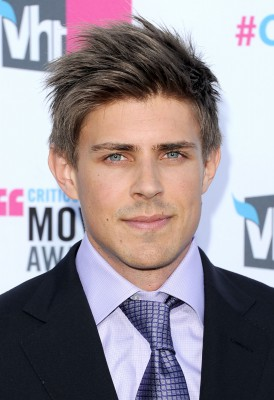
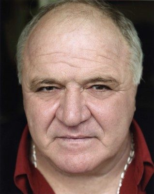
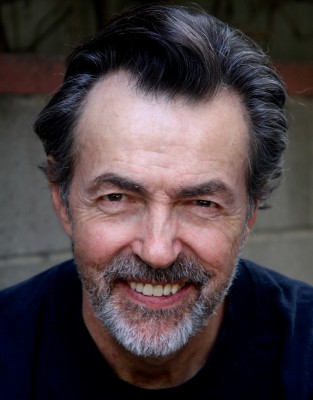

#1027 Up in the Air
Auszeichnungen: für 6 Oscars nominiert 1 GoldenGlobes gewonnen 1 BAFTA-Awards gewonnen

 IMDB-Wertung: 7.4 / 10
IMDB-Wertung: 7.4 / 10  Metascore: 83
Metascore: 83 
Ryan Bingham st einer von den ganz Harten: Zwischenmenschliche Bindungen empfindet der leidenschaftliche Vielflieger er als Ballast, mit seinem Job als Überbringer schlechter Kunde hat er kein Problem. Vielmehr begreift er seinen Job als Würdigung der Mitarbeiter, die er quer durch die Vereinigten Staaten im Auftrag seiner Firma mit einem bunten Strauß voller Euphemismen feuert. Als er der schönen Alex begegnet, scheint er eine Seelenverwandte gefunden zu haben. Die zwei Dauerreisenden verbringen eine unverbindliche Nacht zusammen und lassen ihr weitere folgen. Doch damit beginnen Ryans Probleme erst...
Jahr: 2009
Dauer: 109 Minuten
FSK: 0
Land: USA Studio: ParamountTonspuren: DD5.1 - ,
Untertitel: Deutsch,
Auflösung: 1080p (1920x1040) Größe: 7444 MB
Genre: Drama, Liebe
Regisseur: Jason Reitman
Drehbuch: Walter Kirn, Jason Reitman, Sheldon Turner
Soundtrack: Rolfe Kent
Darsteller:
 George Clooney als Ryan Bingham
George Clooney als Ryan Bingham Vera Farmiga als Alex Goran
Vera Farmiga als Alex Goran Anna Kendrick als Natalie Keener
Anna Kendrick als Natalie Keener Jason Bateman als Craig Gregory
Jason Bateman als Craig Gregory Amy Morton als Kara Bingham
Amy Morton als Kara Bingham Melanie Lynskey als Julie Bingham
Melanie Lynskey als Julie Bingham J.K. Simmons als Bob
J.K. Simmons als Bob Sam Elliott als Maynard Finch
Sam Elliott als Maynard Finch Danny McBride als Jim Miller
Danny McBride als Jim Miller Zach Galifianakis als Steve
Zach Galifianakis als Steve-  Chris Lowell als Kevin
-  Steve Eastin als Samuels
- Marvin Young als Young MC
- Lucas MacFadden als Conference DJ
- Meagan Flynn als Flight Attendant
- Dustin Miles als Ned
-  Matt O'Toole als Alex's Husband
- Erin McGrane als Dianne
- Adhir Kalyan als Irate IT
 Jeff Witzke als Goalquest Host
Jeff Witzke als Goalquest Host- Dave Engfer als Software Dude
- Paul Goetz als Rental Car Assistant
- Adam Rose als Makeout Dave
 Sope Aluko als Software Woman , uncredited
Sope Aluko als Software Woman , uncredited- Kourtney Brown als Make-Out IT , uncredited
- Wayne E. Brown als 1st Officer , uncredited
- Ed Callison als Conference Room Executive , uncredited
- Kevin Crawford als CTC Team Member , uncredited
- Vanessa Elgrichi als Flight Attendant , uncredited
- Chad A. Fehr als Extra , uncredited
- Doug Fesler als Business Traveler , uncredited
- Patrick Fox als Conference Atendee , uncredited
- Lanette Fugit als Flight Attendant , uncredited
- Angela Golden Bryan als Dockside Shopper , uncredited
- Joe Hammerstone als Airport Traveler , uncredited
- HeMan als Software Dude , uncredited
- Carri Jarvis als Flight Attendant , uncredited
- Tamala Jones als Karen Barnes , uncredited
- Walter Kirn als Conference Room Executive , uncredited
- Andrew Kruczynski als Sergeant Perez , uncredited
- Ashley Leilani als Software Technician , uncredited
- Laurel Levey als Computer Geek at Miami Convention , uncredited
- Christian Lopez als Software Tech , uncredited
- Keri Maletto als Software Convention Geek , uncredited
- Meredith Martin als Bikini Girl , uncredited
- Keith Nussbaum als Airline Passenger , uncredited
- Jørgen Pedersen als Wedding Guest , uncredited
- Luke Richmond als Army Soldier , uncredited
- Malik Simmons als Traveler , uncredited
- Scott Stoltz als Conference Attendee , uncredited
Datei: X:\2009(N-Z)\Up in the Air (2009, FSKo.Al., 1920x1040).mkv seit 08.05.2015
Festplatte: HD 2009(G-Z)-2010(A-F)
 Es gibt insgesamt 99 Filme in der Gruppe '2009(N-Z)'
Es gibt insgesamt 99 Filme in der Gruppe '2009(N-Z)'